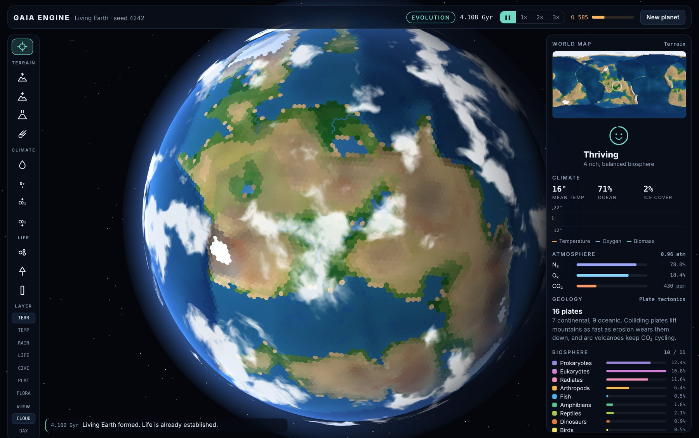
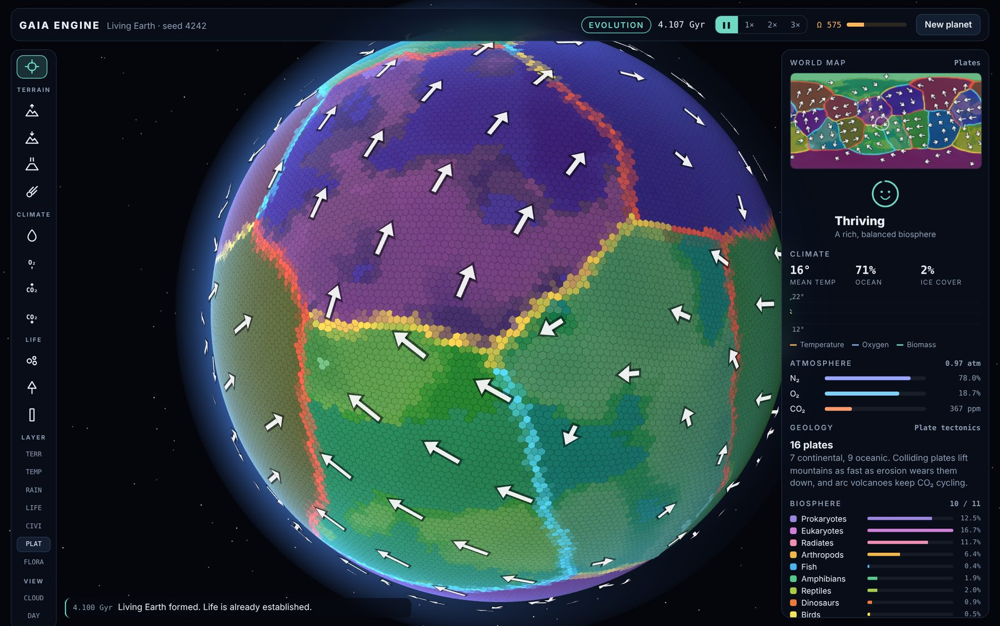
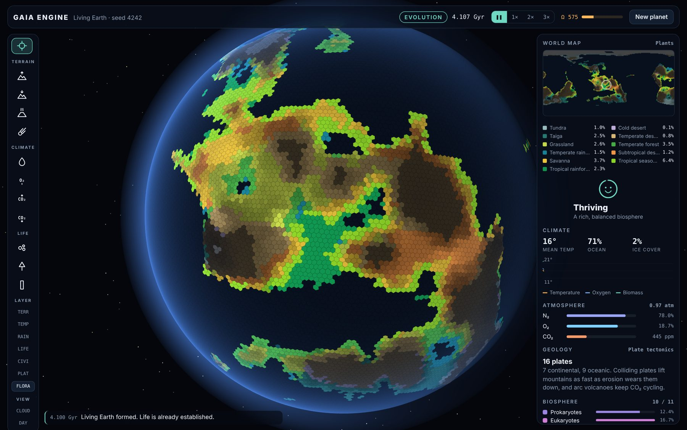
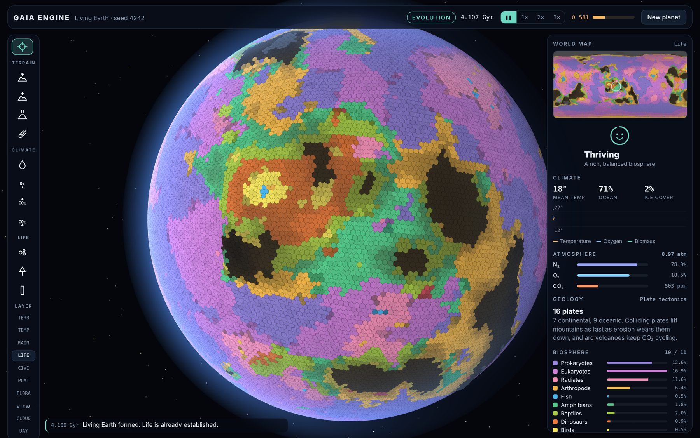
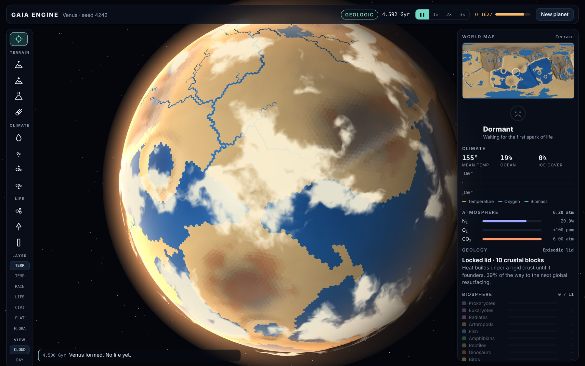

Gaia Engine hands you a planet and a few billion years. Raise mountains, steer the climate, seed the oceans and watch life climb from single cells to a civilization ready to leave for the stars, on a world where plates drift, rivers run and every biome answers to the weather.
Free. Nothing to install. Every world comes from a seed you can share.

Living Earth, 4.1 billion years in: a thriving biosphere on sixteen tectonic plates.
Rock, air, water and life all push on one another. Change one and the rest of the world answers.
The crust is split into drifting plates. Where they collide, mountains rise and trenches sink; where they part, oceans open along mid-ocean ridges. Arc volcanoes erupt and earthquakes strike the cities built on the faults.
Temperature follows latitude, height and the greenhouse. Moisture blows in from the sea and fades inland and uphill. Ice ages, hothouses and snowballs come and go as the air changes.
Rain drains downhill to the sea in rivers that widen as they merge, and fills hollows into lakes. Plants spread into eleven biomes, from tundra and taiga to savanna and tropical rainforest.
Prokaryotes to eukaryotes, radiates and arthropods, fish to amphibians, reptiles, dinosaurs, birds, mammals and whales. Each class has the temperatures and oxygen it needs, and evolves into the next when it can.
Once a species becomes sapient, cities spread from the Stone Age to the Nanotech Age. Factories pump out CO₂, wars and plagues thin the towns, and if they last, the Exodus carries them to the stars.
Switch the globe and map between terrain, temperature, rainfall, life, civilization, tectonic plates with their motion arrows, and plant types. Turn off the clouds, or light the whole globe to see past the night side.
Every world is built on a set of plates, and how they move shapes everything on top of them.

Where plants grow, and which kind, follows from the temperature and the rain.

Each kind of life spreads wherever the water, warmth and oxygen suit it, and gives way where they don't.

Not every planet starts out kind. Some you'll have to remake from the sky down.

Pick a starting world, roll a seed or type one in, and choose its tectonics, or let the planet decide.
A blue-green world with oceans, forests and animals up to mammals. Sapience is close.
Barren rock under a faint sun and a CO₂-rich sky. Nurse the first cells into a biosphere.
A near-total ocean dotted with islands. Life starts in the sea and must find land.
Cold, dry and thin-aired. Thicken the atmosphere and bring water to terraform it.
A crushing CO₂ greenhouse hot enough to melt lead. Scrub the sky to cool it.
Each era brings its own problems, and the planet moves through them as fast as you can keep it alive.
Rock, water and air settle. Volcanoes build the atmosphere and the first oceans fill.
Life takes hold and climbs from single cells to animals, reshaping the air as it goes.
A species wakes up. Towns spread across the land it can farm.
Industry, the atom and the network. Keep the planet alive long enough to launch the Exodus.
Every change costs Ω energy, which builds up over time, faster on a world full of life. Pick a tool and click the globe to use it.
3 Ω30 Ω60 Ω50 Ω60 Ω40 Ω60 Ω20 Ω10 Ω200 ΩThe Monolith lifts nearby life a step up the ladder, or gives a civilization a leap in technology.
Gaia Engine runs entirely in your browser, on your own computer. Pick a world, roll a seed and start the clock.
Free. Best on a desktop or laptop with a recent browser; it needs an internet connection to start.
Found a problem, want a feature, or grew a world you're proud of? We'd love to hear from you.